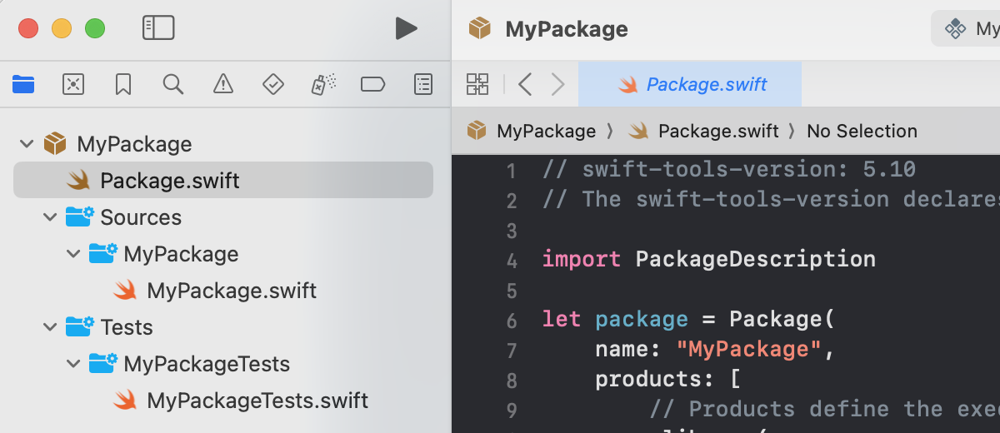

There are two ways to create a Swift package for a library: using the command line and using Xcode. Each approach is discussed in the following sections.
Use the commands shown below to create a library package. Notice the name of the package is MyPackage while the directory is called mypkg. If a name is not provided to the swift package command then the directory name is used as the package name.
mkdir mypkg
cd mypkg
swift package init --name MyPackage
The type of package can be explicitly given as shown here. By default, a library package is created so there is no need to define the type for this example.
swift package init --type library --name MyPackage
The file structure after creating the package is shown below.
mypkg/
├── Sources/
│ └── MyPackage/
│ └── MyPackage.swift
├── Tests/
│ └── MyPackageTests/
│ └── MyPackageTests.swift
├── .gitignore
└── Package.swift
Use the swift test command to run the tests for the package.
Select File > New > Package... then choose Multiplatform Library to create a package in Xcode. The name you provide in the Save As field will be used as the name of the package. The image below shows the Xcode Project Navigator for a package named MyPackage. To run the tests, select Product > Test from the menu or press Command U on the keyboard.

Swift Programming for macOS © 2025
Built by Gavin Wiggins